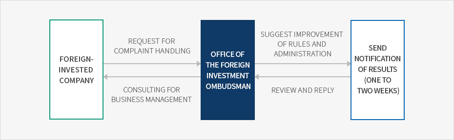
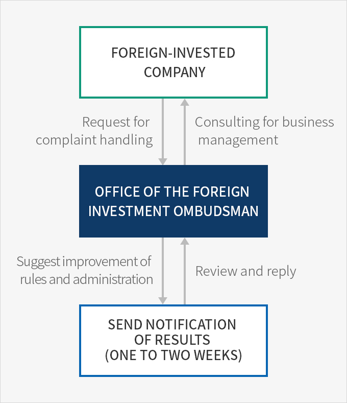

Foreign Investment Ombudsman
- Home
- IK Services
- Introduction of IK
- Foreign Investment Ombudsman
Functions and Authority of the Foreign Investment Ombudsman
Commission and Functions
The foreign investment ombudsman is recommended by the Minister of Trade, Industry and Energy, deliberated upon by the Foreign Investment Committee, and commissioned by the President of the Republic of Korea. The foreign investment ombudsman investigates and handles complaints of foreign investors and foreign-invested companies, devises improvement measures for foreign investment system, and delivers proposals to related administrative or public organizations.Authority
-
When handling complaints of foreign investors and foreign-invested companies, the foreign investment ombudsman may request support from the heads of related administrative organizations and competent authorities in several areas. Heads of related organizations must cooperate, unless there is any special reason. Support may be requested regarding the following
- the submission of explanations of related administrative organizations or data prescribed by Presidential Decree
- statements of opinions of related employees or stakeholders
- cooperation for site visits
- When handling complaints of foreign investors and foreign-invested companies, the foreign investment ombudsman may send recommendations for improvements to the heads of related administrative organizations and competent authorities regarding the following
※ Related law : Article 15.2.3 and 15.2.4 of the Foreign Investment Promotion Act
The Office of the Foreign Investment Ombudsman and Home Doctor Services
The Office of the Foreign Investment Ombudsman
The Office of the Foreign Investment Ombudsman has been established under KOTRA in order to support the foreign investment ombudsman, and the head of the office is the foreign investment ombudsman. This head may request cooperation of related administrative organizations or competent authorities to handle complaints from foreign investors and foreign-invested companies. In such cases, organizations that have received requests must send notifications of results or opinions within seven days.※ Related law: Article 21.4.3 of the Enforcement Decree of the Foreign Investment Promotion Act
Home Doctor System
Home Doctors are consultants designated per region or foreign-invested company who efficiently handle complaints of foreign investors and foreign-invested companies.- Supported fields: Labor/HR, taxation, environment, finance/foreign exchange, tariff/customs clearance, construction, IT and intellectual property rights, settlement, etc.
Procedures of Complaint Handling
Complaints of foreign investors or foreign-invested companies are handled in accordance with the following procedures.
- Complaints are received via a phone call from a Home Doctor, a site visit, online, or through e-mail.
- The Home Doctor reviews the complaints and contacts related organizations to seek solutions.
- Complaint handling is input and managed through KOTRA’s Smart Customer Relationship Management (SCRM) system, and the foreign investor or foreign-invested company is notified once the case has been resolved.
※ Source : 2018 Annual Report of the Foreign Investment Ombudsman (April 2019)
Procedures



- foreign-invested company(request for complaint handling)
- office of the foreign investment ombudsman(suggest improvement of rules and administration)
- send notification of results(one to two weeks,review and reply)
- office of the foreign investment ombudsman(consulting for business management)
- foreign-invested company

Foreign Investment-Related Regulatory Information Service
The Office of the Foreign Investment Ombudsman operates an online regulatory information service, together with the Regulatory Reform Committee of the Office for Government Policy Coordination, in order to collect and incorporate opinions from foreign-invested companies that may be neglected during the legislation process. Regulations related to foreign investment formulated in the government and the national assembly are translated into English, and opinions of foreign-invested companies are delivered to related organizations.
Services
| Category | Service Details |
|---|---|
| Government legislation | Translate and summarize new or reinforced regulations proposed by the government into English (enforcement decrees, enforcement regulations) |
| Collect opinions and comments from foreign-invested companies about related legislation, translate into English, deliver to related government ministries and agencies | |
| National Assembly legislation | Translate and summarize new or reinforced regulations proposed by the National Assembly into English |
| Collect opinions and comments from foreign-invested companies about related legislation, translate into English, deliver to related government ministries and agencies and the National Assembly | |
| Better Regulation Sinmungo (suggest improvement of existing regulations) |
Collect opinions about existing regulations in force, and deliver answers from related government ministries and agencies |